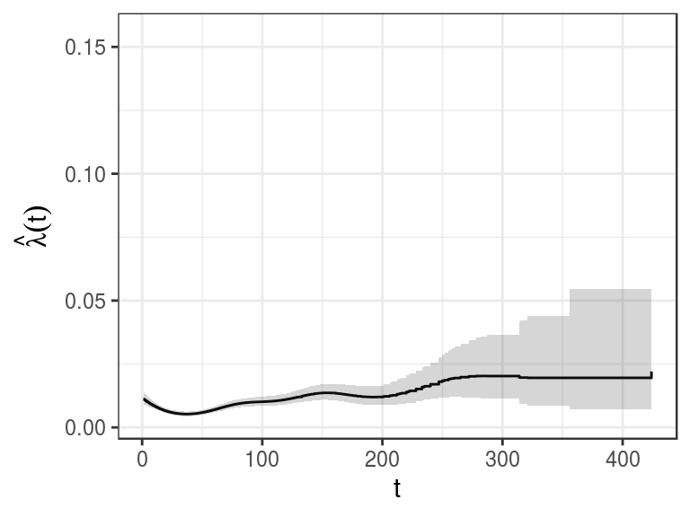

Convenience functions for post-processing PAMs
Andreas Bender
2018-06-03
Source:vignettes/convenience.Rmd
convenience.RmdConvenience functions
Survival analysis entails a set of standard tasks beyond model estimation which need to be performed in most real world applications. These task include:
- summary/visualization of estimated effects
- extraction/visualization of the estimated baseline hazard
- extraction/visualization of the predicted (cumulative) hazards or survival probabilities for specific covariate specifications
- comparison of the predicted (cumulative) hazards or survival probabilities for a set of covariate specifications
- comparison of the predicted (cumulative) hazards or survival probabilities and estimated effects resulting from different model specifications or different subsets of the data.
This package contains some convenience functions to achieve these tasks. The overall philosophy of the package was to provide functions that return the underlying data used for visualization in a tidy format (Wickham and others 2014), such that everybody can use familiar tools for further processing. In addition, some convenience functions for visualization are also included.
We use the mgus2 data (Kyle 1993) from the survival package for illustration in the following.
Summary/visualization of fixed effects
data("mgus2", package = "survival")
ped <- mgus2 %>% as_ped(Surv(futime, death)~age + hgb + sex, id = "id")
pam <- gam(ped_status ~ s(tend) + sex + age + s(hgb), data = ped,
family = poisson(), offset = offset)The easiest way to obtain an overview of the estimated coefficients for fixed effects is to simply call summary on the fitted model object:
##
## Family: poisson
## Link function: log
##
## Formula:
## ped_status ~ s(tend) + sex + age + s(hgb)
##
## Parametric coefficients:
## Estimate Std. Error z value Pr(>|z|)
## (Intercept) -9.133845 0.256891 -35.555 < 2e-16 ***
## sexM 0.472157 0.068539 6.889 5.62e-12 ***
## age 0.055019 0.003398 16.191 < 2e-16 ***
## ---
## Signif. codes: 0 '***' 0.001 '**' 0.01 '*' 0.05 '.' 0.1 ' ' 1
##
## Approximate significance of smooth terms:
## edf Ref.df Chi.sq p-value
## s(tend) 7.525 8.428 88.12 2.89e-15 ***
## s(hgb) 3.384 4.256 87.47 < 2e-16 ***
## ---
## Signif. codes: 0 '***' 0.001 '**' 0.01 '*' 0.05 '.' 0.1 ' ' 1
##
## R-sq.(adj) = 0.0055 Deviance explained = 5.55%
## UBRE = -0.92892 Scale est. = 1 n = 123848However, we also provide a convenience function that extracts a fixed coefficient table from mgcv::gam objects (including confidence intervals) and a convenience function that creates a forrest-type plot:
## # A tibble: 2 x 4
## variable coef ci_lower ci_upper
## <chr> <dbl> <dbl> <dbl>
## 1 sexM 0.472 0.335 0.609
## 2 age 0.0550 0.0482 0.0618
We can see that the estimated mortality risk for male subjects is increased by a factor of about \(\exp(0.47) = 1.6\) compared to female subjects.
Summary/visualization of smooth effects
A first quick overview over the smooth effects is provided in the bottom part of output of the summary call above. The interpretation is the same as as for mgcv::gam objects (see ?summary.gam for details). Briefly, the edf column provides the number of effective degrees of freedom used to fit the spline (values larger than 1 indicate non-linearity) and the p-value refers to a significance test against the null hypothesis of “no effect” (i.e., \(H_0: f_j(x_j) = 0\); test developed in Wood (2013)).
Usually, however, we want to visualize the non-linear effect by plotting \(f_j(x_j)\) over the range of \(x_j\) values. One possibility using base R plotting functions is to call the default plot function for mgcv::gam objects. Note that PAM effects are additive on the log-hazard scale, so we have to plot \(\exp(f_j(x_j))\) (right panel below) in order to read hazard ratios off the figure:
## extract smooths plot data
shgb <- tidy_smooth(pam) %>% filter(xlab=="hgb")
## create plots for hgb effect
hgb_ggp <- ggplot(shgb, aes(x=x)) +
geom_line(aes(y=fit)) +
geom_ribbon(aes(ymin=ci_lower, ymax=ci_upper), alpha=0.1) +
ylab("f(hgb)") + xlab("hgb")
hgb_ggp_log <- ggplot(shgb, aes(x=x)) +
geom_line(aes(y=exp(fit))) +
geom_ribbon(aes(ymin=exp(ci_lower), ymax=exp(ci_upper)), alpha=0.1) +
ylab("exp(f(hgb))") + xlab("hgb")+
coord_trans(y="log")
## combine into one graph
gridExtra::grid.arrange(hgb_ggp, hgb_ggp_log, nrow = 1)
If you want to customize the figure using other graphics packages you can extract the data used for plotting via:
## # A tibble: 6 x 6
## term x eff se ci_lower ci_upper
## <chr> <dbl> <dbl> <dbl> <dbl> <dbl>
## 1 hgb 5.70 1.34 0.337 0.669 2.02
## 2 hgb 5.83 1.32 0.320 0.678 1.96
## 3 hgb 5.97 1.29 0.304 0.685 1.90
## 4 hgb 6.10 1.27 0.288 0.692 1.84
## 5 hgb 6.23 1.24 0.273 0.697 1.79
## 6 hgb 6.37 1.22 0.258 0.702 1.73For convenience we also include a function that plots multiple selected smooth effects in one figure1:

Extraction/Visualization of the baseline hazard
In PAMs the baseline hazard \(\lambda_0(t)\) is estimated semi-parametrically as a (potentially) non-linear smoothed step function. Thus the model specification usually looks like
\[ \log(\lambda(t|x)) = \beta_0 + f_0(t) + \ldots \]
Thus the term \(f_0(t)\) represents the time-varying part of the log-baseline-hazard.
To create a data set with all interval cut-points we can use the function ped_info applied to an object of class ped (piece-wise exponential data). In addition to information about each interval, the data set returned by the function contains mean values of continuous variables and the modal values of categorical variables.
## # A tibble: 6 x 8
## tstart tend intlen intmid interval age hgb sex
## <dbl> <dbl> <dbl> <dbl> <fct> <dbl> <dbl> <fct>
## 1 0. 1. 1. 0.500 (0,1] 70.4 13.3 M
## 2 1. 2. 1. 1.50 (1,2] 70.4 13.3 M
## 3 2. 3. 1. 2.50 (2,3] 70.4 13.3 M
## 4 3. 4. 1. 3.50 (3,4] 70.4 13.3 M
## 5 4. 5. 1. 4.50 (4,5] 70.4 13.3 M
## 6 5. 6. 1. 5.50 (5,6] 70.4 13.3 M## # A tibble: 6 x 8
## tstart tend intlen intmid interval age hgb sex
## <dbl> <dbl> <dbl> <dbl> <fct> <dbl> <dbl> <fct>
## 1 282. 287. 5. 284. (282,287] 70.4 13.3 M
## 2 287. 314. 27. 300. (287,314] 70.4 13.3 M
## 3 314. 315. 1. 314. (314,315] 70.4 13.3 M
## 4 315. 321. 6. 318. (315,321] 70.4 13.3 M
## 5 321. 356. 35. 338. (321,356] 70.4 13.3 M
## 6 356. 424. 68. 390. (356,424] 70.4 13.3 MThis data set can be used to conveniently obtain the hazard, cumulative hazard and survival functions evaluated at the joint mean (and mode) of the covariates for all time points in the data:
ped_df <- ped_df %>% add_hazard(pam)
ped_df %>% select(interval, hazard, ci_lower, ci_upper) %>% head()## # A tibble: 6 x 4
## interval hazard ci_lower ci_upper
## <fct> <dbl> <dbl> <dbl>
## 1 (0,1] 0.0111 0.00901 0.0137
## 2 (1,2] 0.0108 0.00880 0.0132
## 3 (2,3] 0.0104 0.00859 0.0127
## 4 (3,4] 0.0101 0.00838 0.0122
## 5 (4,5] 0.00981 0.00818 0.0118
## 6 (5,6] 0.00951 0.00797 0.0113## # A tibble: 6 x 4
## interval hazard ci_lower ci_upper
## <fct> <dbl> <dbl> <dbl>
## 1 (282,287] 0.0203 0.0113 0.0364
## 2 (287,314] 0.0197 0.00927 0.0418
## 3 (314,315] 0.0197 0.00918 0.0420
## 4 (315,321] 0.0195 0.00869 0.0439
## 5 (321,356] 0.0195 0.00699 0.0546
## 6 (356,424] 0.0220 0.00312 0.156Which in turn can be conveniently plotted using respective functions, e.g.
ggplot(ped_df, aes(x = tend)) +
geom_step(aes(y = hazard)) +
geom_stepribbon(aes(ymin = ci_lower, ymax = ci_upper), alpha = 0.2) +
ylab(expression(hat(lambda)(t))) + xlab(expression(t))
or the cumulative hazard
gg.chaz <- ped_df %>% add_cumu_hazard(pam) %>%
ggplot(aes(x = tend, y = cumu_hazard, ymin = cumu_lower, ymax = cumu_upper))
gg.chaz + geom_line() + geom_ribbon(alpha = 0.2) +
ylab(expression(hat(Lambda)(t))) + xlab(expression(t))
or the survival probabilities
gg.surv <- ped_df %>% add_surv_prob(pam) %>%
ggplot(aes(x = tend, y = surv_prob, ymax = surv_lower, ymin = surv_upper))
gg.surv + geom_line() + geom_ribbon(alpha = 0.2) +
ylab(expression(hat(S)(t))) + xlab(expression(t))
This approach is very convenient, as the usual tidy dplyr workflow can be maintained throughout, for example, if we wanted to plot the cumulative hazard for different sexes:
## # A tibble: 6 x 11
## # Groups: sex [1]
## tstart tend intlen intmid interval age hgb sex cumu_hazard
## <dbl> <dbl> <dbl> <dbl> <fct> <dbl> <dbl> <fct> <dbl>
## 1 0. 1. 1. 0.500 (0,1] 71.3 12.8 F 0.00812
## 2 1. 2. 1. 1.50 (1,2] 71.3 12.8 F 0.0160
## 3 2. 3. 1. 2.50 (2,3] 71.3 12.8 F 0.0236
## 4 3. 4. 1. 3.50 (3,4] 71.3 12.8 F 0.0310
## 5 4. 5. 1. 4.50 (4,5] 71.3 12.8 F 0.0382
## 6 5. 6. 1. 5.50 (5,6] 71.3 12.8 F 0.0451
## # ... with 2 more variables: cumu_lower <dbl>, cumu_upper <dbl>##
## F M
## 218 218ggplot(pinfo.sex, aes(x = tend, y = cumu_hazard)) +
geom_ribbon(aes(ymin = cumu_lower, ymax = cumu_upper, fill = sex), alpha = 0.3) +
geom_line(aes(col = sex)) +
scale_color_brewer(palette = "Set1") +
scale_fill_brewer(palette = "Set1") +
ylab(expression(hat(Lambda)(t))) + xlab(expression(t))
References
Kyle, Robert A. 1993. “"Benign" Monoclonal Gammopathy – After 20 to 35 Years of Follow-up.” In Mayo Clinic Proceedings, 68:26–36. 1.
Wickham, Hadley, and others. 2014. “Tidy Data.” Journal of Statistical Software 59 (10):1–23.
Wood, Simon N. 2013. “On P-Values for Smooth Components of an Extended Generalized Additive Model.” Biometrika 100 (1):221–28.
Note that graphical representation of the baseline hazard is a slight approximation here – it should be a step function, since the baseline is piecewise constant over the intervals, cf. the baseline hazard function plotted correctly below.↩